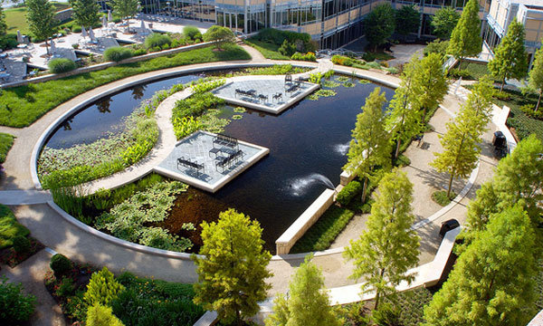
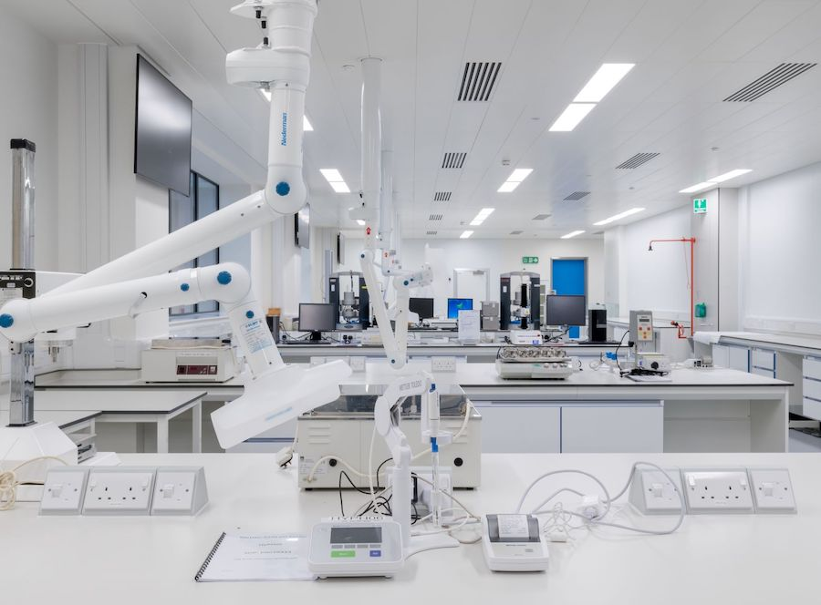
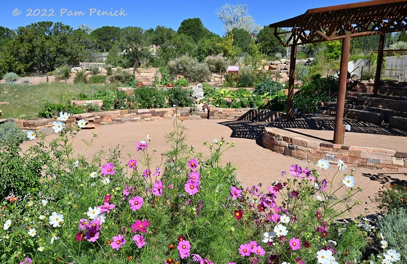

Nestled in the heart of a serene landscape, Verteo Biopharma's campus is a breathtaking testament to the harmonious fusion of nature and cutting-edge science. Spread across acres of lush greenery, the campus exudes an air of tranquility that belies the innovative energy that thrives within its walls.
As you enter the campus, a winding tree-lined drive welcomes you, offering a glimpse of the meticulously landscaped gardens that adorn the surroundings. The campus is a masterpiece of architectural design, seamlessly blending modernity with the organic beauty of its environment. Glass-paneled buildings rise majestically, reflecting the vibrant colors of the seasons and creating a visual symphony that inspires creativity and innovation.

Walking through the campus, you'll encounter state-of-the-art research facilities that are at the forefront of the biosciences industry. The laboratories are equipped with cutting-edge equipment and technology, enabling Verteo's dedicated scientists to push the boundaries of scientific discovery. The labs are not just places of work but also spaces of inspiration, where breakthroughs happen against a backdrop of natural serenity.

One of the campus's standout features is the botanical garden, a haven of biodiversity that serves as a reminder of the importance of preserving our planet's natural wonders. It's a place for employees to unwind, reflect, and find inspiration in the midst of their demanding work. The garden features a diverse array of flora, from colorful blooms to tranquil ponds, creating a peaceful retreat that sparks creativity and a sense of connectedness with the environment.
The campus also boasts a central amphitheater, where knowledge is shared, and ideas are born. It's here that Verteo's medical science liaisons and sales representatives gather to discuss the latest advancements in the pharmaceutical sector and prepare to present products like Cholecap. The amphitheater is surrounded by vibrant flowerbeds, adding a touch of color and vitality to every meeting and presentation. It's a space where the synergy between nature and science is truly palpable, fostering a spirit of collaboration and shared vision.

Amidst the beauty of the campus, the commitment to environmental sustainability is evident. Solar panels adorn the rooftops, and recycling stations are strategically placed throughout the grounds. Verteo Biopharma understands the importance of not only improving human health but also safeguarding the health of our planet. This dedication to sustainability is a reflection of the company's ethos, ensuring that progress in science is aligned with progress in environmental responsibility.
In every corner of this remarkable campus, you'll find an environment that encourages innovation, collaboration, and the pursuit of excellence in the field of biosciences. It's a place where the beauty of nature and the beauty of scientific discovery come together, serving as a fitting backdrop for Verteo's mission to improve human well-being.